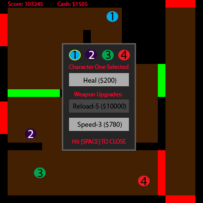

High Concept
Survive waves of ghosts and ghouls in this top-down haunted house defense!
Genre
'Arcade Action' game with stretch 'Tower Defense' like features. Strategy plays an important role in the action!
Platform
Desktop only. Controls for this game would be too hard for mobile.
Story
A couple of friends think it would be a cool idea to explore a neighborhood haunted house one Halloween night. The friends think they are prepared for what lies ahead, but unbeknownst to them some ghouls and ghosts are ready to attack them. Help them defend the house for their lives!
The mood of this game is cartoony fun. It has a fake dark atmosphere with 'spooky' sounds but is very light. The players’ motivation is to beat their previous record at defending from the increasing hordes of enemies. These records will be stored locally and checked after each round. It will be a strategic and skill-based single player game, so coming up with a great strategy will tremendously help your score. In the same way, I will attempt to allow a few different ways to play the game successfully.
Esthetics
Mentioned a bit prior, the graphics style will be cartoony fun. It will be very minimalistic graphically. Each shot will have a small sound effect, each enemy vanquished will give a larger sound effect, and a round victory will grant an even grander completion sound. The style of these sounds will be like an arcade game, but slightly modernized. A small song will be playing in the background of rounds, with a separate one playing in the in-between phase.
Mechanics
This action arcade game will be unique because it will have a group of four that players switch between. This means that they need to prioritize which character they want to fight with and move at that exact moment. Players will be able to move characters at their own volition. The hordes of enemies will start off small and increase at a slow but steady pace. Their health will increase on top of this number increase, requiring more and more tactics and areas given up. At certain rounds, routes will be closed up, either separating characters or giving characters less mobility. The enemy spawn points are consistent but the number of enemies emanating from each will be random to offer variability in how rounds play out and to avoid simple strategies winning out over more complex ones. Since the goal is to survive as long as possible, there is no end to the fun until the players lose! There is a stretch goal for players upgrading defenses. Upgrading defenses would involve healing and or simply upgrading the stats of an individual character’s weapon (Making their slingshot shoot faster or making them reload it quicker!). This whole menu is a stretch goal.

Controls
Teaching the Game: There will be a small description below the game of how to play as there will be quite a few buttons, but they will not be overly complicated. Controls will include switching between characters using number keys, moving them with WASD, aiming with the mouse, and left clicking to attack the ghouls and ghosts. The attacks are projectile based. The upgrade menu is brought up with spacebar in-between rounds on top of that.
The basic mechanics of the game will be included in the small and straight-forward description.
In order to beat the game, players will need to prioritize what they value. If they believe that having all four members in one room they can survive longer than being spread out, they can use that as a valid strategy (and vice-versa). Other strategies include reacting to the change in pathing (doors opening and closing), the change in health of the enemies and who to let ‘die’ in tough scenarios. When enemies take more hits to die, will you be able to sit in a corner effectively still? If we get far enough, there would also be the strategies pertaining to who to upgrade and who to focus on upgrading only confounded by random enemy spawns and closing sections that won’t be open some rounds. Players will know which doors will be closed and which will be open prior to the round start.
About the Developers
I (Bud Boehringer) am a Second Year Game Design and Development student who is eager to learn more about making games. I currently use C#, Java, HTML, CSS, Maya and design levels! Tommy Delp is also a Second Year Game Design and Development student who is working on this final project as well.